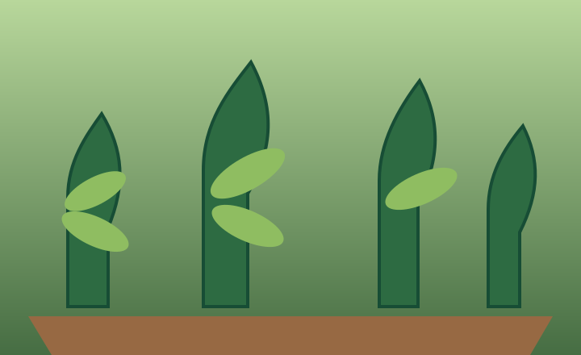

Humedad del suelo · Lectura 10:41
24 %
Rango de planta 35–55 %
Evolución de hoy
Humedad · Rango 35–55 %
Hoy, 09/10/2026 · 6 lecturas · Zona 2
Panel / Detalle de zona
Consulta la planta y los registros de esta zona.

Ocimum basilicum
Hierba aromática de uso culinario. Requiere humedad moderada y luz abundante.
Humedad del suelo · Lectura 10:41
24 %
Rango de planta 35–55 %
Humedad · Rango 35–55 %
Hoy, 09/10/2026 · 6 lecturas · Zona 2
Seca · Planta asignada a Zona 2
Nodo 2 en línea
Última lectura · Hoy 10:41
Último riego · Ayer 18:30
Rango de planta · 35–55 %
Tiempo en rango
65 %Periodo de 24 horasHoras fuera de rango
8,4 hPeriodo de 24 horasLa gráfica compara tus lecturas con el rango recomendado para la planta. El cambio de planta se marca cuando corresponde.
Línea verde: humedad medidaBanda verde: rango recomendado
09/10/2026 · Periodo de 24 horas · Albahaca 35–55 %
08/10
60 s120 ml · caudal 2 ml/s09/10
0 s0 ml · sin riego registradoAgua estimada = segundos × caudal. No es medición directa.La orden quedará pendiente y se ejecutará cuando el nodo despierte.